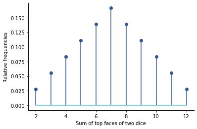
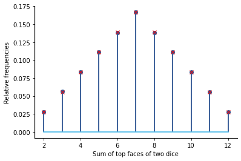

Combinatorics
Contents
4.6. Combinatorics#
“Counting is the religion of this generation… Anybody can count…” – Gertrude Stein
For fair experiments with a finite sample space \(S\), we used Axiom III of the Axioms of Probability to show that the probability of an event \(E\) is simply
Thus, the problem of calculating \(P(E)\) is simplified to counting the cardinalities of \(S\) and \(E\). As most people have learned to count as young children, this sounds like a simple exercise. However, in practice, this is often quite challenging. In fact, this general problem space is rich enough that this branch of mathematics has its own name:
DEFINITION
- combinatorics#
Combinatorics is the mathematics of counting.
Warning
One of the biggest mistakes made by people learning the material in this section is to try to mix probabilities and combinatorics when computing the probability of an event. When solving most problems with combinatorics, the solution should only consist of these three steps:
Find \(|S|\) using combinatorics. This is usually not difficult.
Find \(|E|\) using combinatorics. This may be very challenging, even if the textual description of an event is simple.
Calculate
Note that no probability is computed until the last step. This approach is illustrated when calculating probabilities in the examples below.
For the data science topics covered in this book, we do not have to deal with many very challenging counting problems. However, if you look back over the past chapters, you may be discover that several problems have already been introduced that could be solve by counting:
Example A: In Chapter 2, we asked “If you only observe 6 heads on the 20 flips, should you reject the idea that the coin is fair?” We solved this problem via simulating flipping a fair coin 20 times and determining the probability of seeing 6 or fewer heads. However, if we record the ordered Heads and Tails outcomes, this is a fair experiment, and so we could solve for the same probability by counting the number of outcomes with 6 or fewer heads.
Example B: In Chapter 3, we conducted a bootstrap test where we pool the data for the US states and then perform bootstrap sampling to create random samples under the null hypothesis. When determining how many random draws we might use, it is useful to know how many ways there are to partition the data in this way.
Example C: In Fair Experiments, the relative frequencies were shown for the sum of two fair 6-sided dice, as used in Monopoly. If we record the ordered set of top faces of the dice, then the set experiment is a fair experiment, and we can calculate the exact probabilities for the sum of the faces using combinatorics.
Note that the first and third examples are both types of compound experiments, which consist of a sequence of subexperiments. Suppose there are \(K\) subexperiments, and the sample space for the \(i\)th subexperiment is \(S_i\). Then the sample space for the compound experiment is
This notation for \(S\) is tedious. We introduce the following operator to simplify the notation for the sample space:
DEFINITION
- cartesian product#
The cartesian product of two sets \(A\) and \(B\) is denoted \(A \times B\) and is defined by
\[ A \times B = \{ (a,b) | a \in A \mbox{ and } b \in B\}. \]That is, it is the set of all two-tuples with the first element from set \(A\) and the second element from set \(B\).
We can form the sample space for our repeated experiment through repeated application of the Cartesian product to the individual sample spaces:
We start by seeing how we can use Python to calculate probabilities by enumerating and then counting sample spaces and events:
4.6.1. Enumerating Sample Spaces and Events Using IterTools#
Let’s start by enumerating \(S\) and showing how it can be used to calculate probabilities. We will use the Python itertools library, which is distributed as part of standard Python distributions to enumerate \(S\). Begin by importing this library:
import itertools
Example A: Monopoly Dice
Consider counting for the Monopoly dice problem. The simulated values for the relative frequencies are shown below:

The sample spaces for the two dice are the same. In Python, we can define them using simple ranges:
S0 = range(1, 7)
S1 = range(1, 7)
The itertools library has a product function to carry out the Cartesian product over these two ranges:
S = itertools.product(S0, S1)
for s in S:
print(s, " ", end="")
(1, 1) (1, 2) (1, 3) (1, 4) (1, 5) (1, 6) (2, 1) (2, 2) (2, 3) (2, 4) (2, 5) (2, 6) (3, 1) (3, 2) (3, 3) (3, 4) (3, 5) (3, 6) (4, 1) (4, 2) (4, 3) (4, 4) (4, 5) (4, 6) (5, 1) (5, 2) (5, 3) (5, 4) (5, 5) (5, 6) (6, 1) (6, 2) (6, 3) (6, 4) (6, 5) (6, 6)
Warning
Note that the itertools functions generally provide an iterator to go over the resulting set. Iterators will produce values until exhausted. Unlike looping over a range or list, you cannot execute the loop again using the iterator once it has reached the end. The number of items to be iterated over also cannot be directly determined – you must iterate over all of the items to determine how many there are.
When the number of items being iterated over is small, the iterator can be used to directly create a list of these items:
Slist = list(itertools.product(S0, S1))
print(Slist)
[(1, 1), (1, 2), (1, 3), (1, 4), (1, 5), (1, 6), (2, 1), (2, 2), (2, 3), (2, 4), (2, 5), (2, 6), (3, 1), (3, 2), (3, 3), (3, 4), (3, 5), (3, 6), (4, 1), (4, 2), (4, 3), (4, 4), (4, 5), (4, 6), (5, 1), (5, 2), (5, 3), (5, 4), (5, 5), (5, 6), (6, 1), (6, 2), (6, 3), (6, 4), (6, 5), (6, 6)]
As expected from our previous examples, there are 36 items in the sample space:
len(Slist)
36
We can find the probability for the sums of the dice faces by iterating over \(S\) and counting the number of times each sum occurs. It is easy to see that the sum of the faces will be between 2 and 12. We initialize a list with 13 zeros (from 0 to 12) to store the counts.
counts = [0] * 13
for s in Slist:
counts[sum(s)] += 1
print("sum:", "# ways of occurring")
for c in range(2, 13):
print(c, ":", counts[c])
sum: # ways of occurring
2 : 1
3 : 2
4 : 3
5 : 4
6 : 5
7 : 6
8 : 5
9 : 4
10 : 3
11 : 2
12 : 1
The right-hand column is the cardinality of the event described by the left-hand column. As the events partition the sample space (i.e., the are disjoint and cover everything in the sample space), the sum of the right-hand column is equal to the cardinality of \(S\):
sum(counts), len(Slist)
(36, 36)
If we let \(E_i\) denote the event that the sum of the dice faces is \(i\), then \(P(E_i) = |E_i| / |S|\), where the values of \(|E_i|\) are given in the table above. Thus, the probabilities are:
probs = [0] * 13
print("sum: probability")
for c in range(2, 13):
probs[c] = counts[c] / len(Slist)
print(c, ": ", probs[c])
sum: probability
2 : 0.027777777777777776
3 : 0.05555555555555555
4 : 0.08333333333333333
5 : 0.1111111111111111
6 : 0.1388888888888889
7 : 0.16666666666666666
8 : 0.1388888888888889
9 : 0.1111111111111111
10 : 0.08333333333333333
11 : 0.05555555555555555
12 : 0.027777777777777776
Let’s plot the analytical result along with simulated values:
import matplotlib.pyplot as plt
import numpy as np
import numpy.random as npr
die1 = npr.randint(1, 7, size=1_000_000)
die2 = npr.randint(1, 7, size=1_000_000)
dice = die1 + die2
vals, mycounts = np.unique(dice, return_counts=True)
rel_freqs = mycounts / len(dice)
plt.stem(vals, rel_freqs, use_line_collection=True)
plt.stem(range(2, 13), probs[2:13], markerfmt="rx", use_line_collection=True)
plt.xlabel("Sum of top faces of two dice")
plt.ylabel("Relative frequencies");

The relative frequencies match the true (analytical) probabilities quite closely.
Example B: Bootstrap Sampling
In the example in Chapter 3, we performed null hypothesis testing using bootstrap resampling. This is performed by pooling all the data and then repeatedly creating new groups by sampling with replacement from the pooled data. The sizes of the new groups are equal to the sizes of the groups in the original comparison.
A reasonable question to ask when performing bootstrap resampling is: How many ways are there to resample the data using bootstrap sampling?
It turns out that for the full set of 50 US states, the number of ways that 2 groups of size 25 can be created via bootstrap resampling is too large to even iterate over in Python.
Instead, we consider the smaller example of data from 6 states partitioned into 2 groups of size 3. It is convenient to represent the pooled data as \(P_B=[0,1,2,3,4,5]\). The actual data values are not important for counting:
PB = range(6)
Now we use itertools to iterate over all the groups of size 3 that can be created by sampling without replacement. This is a compound experiment with identical sample spaces for each component experiment. We can create an iterator for the sample space of one of these groups using itertools.product by passing PB and the keyword argument repeat with the number of items in the groups:
S3 = itertools.product(PB, repeat=3)
countB1 = 0
for s in S3:
countB1 += 1
print("Number of ways to choose a group of size 3 under bootstrap sampling is", countB1)
Number of ways to choose a group of size 3 under bootstrap sampling is 216
Note that we are not done. We are interested in the number of ways to choose both groups of size 3. This can be considered to be a compound experiment in which each of the individual experiments has 216 outcomes. In other words, the second group has 216 outcomes for each outcome of the first group:
S3 = itertools.product(PB, repeat=3)
countB2 = 0
for s in S3:
S3_2 = itertools.product(PB, repeat=3)
for s in S3_2:
countB2 += 1
print(
"Number of ways to choose TWO groups of size 3 under bootstrap sampling is", countB2
)
Number of ways to choose TWO groups of size 3 under bootstrap sampling is 46656
If we are running a simulation to randomly draw groups, then it makes little sense to use more than 46656 draws because:
We could just iterate over all of the 46656 groups. (This is called an exact permutation test, and is considered in Chapter 6.)
As the number of random draws gets large (close to 46556), the number of draws that are repeats of other random draws in the simulation will get increase. Thus, we are really not gaining new information by increasing the number of draws further.
Example C: Flipping a Fair Coin 20 Times
Now consider flipping a fair coin 20 times and determining the probability of an outcome less than or equal to 6. Each of the 20 subexperiments has the same sample space. Using \(H\) to denote heads and \(T\) to denote tails, we can refer to these sample spaces as:
Si = ["H", "T"]
As before, we can create an iterator for the sample space of the compound experiment using itertools.product by passing Si and the keyword argument repeat with the number of repetitions as follows:
Sdice = itertools.product(Si, repeat=20)
We can count the cardinality of the sample space and the event that the number of heads is 6 or less simultaneously while looping over the outcomes in the sample space:
Sdice = itertools.product(Si, repeat=20)
Scount = 0
Ecount = 0
for s in Sdice:
Scount += 1
if s.count("H") <= 6:
Ecount += 1
print("|E|=", Ecount, " |S|=", Scount)
|E|= 60460 |S|= 1048576
The the probability of seeing 6 or fewer heads is:
print("P(6 or fewer heads)=", Ecount / Scount)
P(6 or fewer heads)= 0.057659149169921875
Compare this value with the estimated probability found via simulation in First Statistical Tests. The two values are very close, so the simulation did a good job at estimating this probability (at least with 1,000,000 iterations). Note that you probably don’t want to go through all 1,048,576 outcomes by hand. Moreover, if the number of coin flips increased significantly, it may be challenging to even iterate over them. This motivates us to develop mathematical methods for counting the cardinalities of sample spaces and events without enumerating them.
4.6.2. Determining Cardinalities of Sample Spaces and Events Mathematically#
We start with a basic result on counting in the context of sample spaces for compound experiments. If \(S\) is a set that can be written as a Cartesian product,
then cardinality of \(S\) is the product of the cardinalities of the sets in the Cartesian product: $\( |S|= |S_0| \cdot |S_1| \cdot \ldots \cdot |S_{K-1}|. \)$
For instance, for the Monopoly dice problem, \(|S_0|=|S_1|=6\), so \(|S| = |S_0| \cdot |S_1| = 6 \cdot 6 = 36\).
This is an example of drawing items from a set and recording the ordered sequence of outcomes, where each item is placed back into the set before the next draw. This is called sampling with replacement and with ordering. For a set of \(k\) draws from \(N\) items, sampling with replacement means that each \(|S_i|\) in the expression above is equal to \(N\). Thus,
Sampling with Replacement and with Ordering
The number of ways to choose \(k\) items from a set of \(N\) items with replacement and with ordering is
For flipping a fair coin 20 times, \(N=2\) and \(k=20\), so and \(|S| = 2^{20} = 1,048,576\).
Example A: Monopoly Dice
Let’s consider how to find the probability for a particular value of the sum of the dice. Let \(E_8\) be the event that the sum of the numbers on the top faces of the two dice is 10. To find \(P(E_{10})\), we have to determine \(|E_{10}|\). Note that if we know the value of the first die, then the value of the second die is determined. Moreover, not all values of the first die can result in a sum of 10. So we just need to determine what values of the first die can result in sums of 10. The smallest value of the first die that can result in a sum of 10 will occur when the second die has a value of 6. So, the first die must be at least 4. Clearly, if it is larger than 4, there will be a value of the second die that results in a sum of 10. From this, we conclude that \(|E_{10}|=3\). To be explicit,
Then \(P(E_3) = 3/36 = 1/12\)
1 / 12
0.08333333333333333
(Reader, please compare this with the probability found through enumeration in the version of this example using itertools.)
Example B: Bootstrap Resampling
Consider again bootstrap resampling from a pool of 6 data points to two groups of cardinality 3. This a problem of sampling with replacement and with ordering, so the total number of groups is:
(6 ** 3) * (6 ** 3)
46656
This is the same result we found via itertools.
Now consider bootstrap resampling data from all 50 US states into groups of 25. We saw for the pooled data of size 6 that it did not make sense to draw from it more than about 50,000 times. Should we be concerned that we will have a similar problem when working with the full data set?
The total number of groups that can be created using the full data set is
(50 ** 25) * (50 ** 25.0)
8.881784197001254e+84
(I purposefully put a decimal on one of the 25s so that the result would be shown in scientific notation rather than as an extremely long integer.)
If you are not sure if this is a big number, you may want to compare to this Wikipedia article about the number of atoms in the observable universe. From the article, we can infer that the number of atoms in the observable universe is less than \(10^{80}\), which is less than the number of groups we can create via bootstrap resampling. Thus, there is no concern that our resampling simulation will exhaust the number of groups when dealing with the full data set.
Example C: Flipping a Fair Coin 20 Times
This experimental set up seems even easier than the Monopoly dice problem because of the small size of the subexperiment sample spaces, but enumerating the event that the number of heads is 6 or fewer turns out to be much more challenging and will require us to introduce some new mathematical tools. Before we get to that, let’s answer a few questions that will help us build to our ultimate result:
Let \(H_i\) be the event that there are exactly \(i\) heads on the 20 flips.
First, what is \(|H_0|\)? There is exactly one way to get zero heads. All of the 20 flips were tails.
Next, what is \(|H_1|\)? There is exactly one head in the 20 flips. It can either be on the first flip, the second flip, …, or finally the 20th flip. In other words, there are 20 different places for the heads to be, so \(|H_1|=20\).
Now, what is \(|H_2|\)? This is where things start to get challenging and interesting. We will solve this two ways. The first way will get us the answer. The second way will help lead us to a general solution for \(H_i\).
Counting \(H_2\): Way 1
We can count \(|H_2|\) in much the same way that we counted \(H_1\). For convenience, let’s consider the flips in order. For each place the first heads occurs, we will have multiple places that the second heads could occur. I.e., if the first heads is on flip 0, then the second heads can be on flips 1 through 19. But if the first head is on flip 18, the second head has to be on flip 19. The total number of outcomes in \(H_2\) can thus be written as
(The last summation is a standard form.)
Note that we could have used Python to calculate this sum:
total = 0
for i in range(0, 19):
for j in range(i + 1, 20):
total += 1
print(total)
190
Exercise
Extend the approach described above to give a formula for the \(|H_3|\). (For this purpose, I recommend you use three summation terms, although a more general and sophisticated solution for skilled programmers can be created using recursion.) Use Python to evaluate the sum. Check your answer using the self-assessment quiz below:
This approach will get increasingly tedious and challenging to write and compute as we consider \(H_i\) for larger \(i\).
Counting \(H_2\): Way 2
Consider a second approach in which we try to count how many ways we could create the result (i.e., an \(n\) tuple) of the flips:
The first heads can go in any of the 20 places.
The second heads can go in any of the remaining 19 places.
Then the total number of results is \(20 \cdot 19 = 380\).
But this result does not match up with the one we just computed in detail! Why?
The reason is that we have overcounted. For instance, let’s mark the first value we choose by underlining it. Then here are two outcomes we will find this way (values not shown are all \(T\)):
Our counting mechanism has created two different representations (orderings) of the same outcome (i.e., where there is a heads on rolls 0 and 3). The number we will count in this way is twice the total number because for any particular outcome, there are two different orders by which we could have created it (i.e., by putting the first \(H\) in the leftmost position or by putting the first \(H\) in the rightmost position). So, we have to divide by two to get: \(|H_2| = 20 \cdot 19 /2 =190\), which agrees with our previous result.
But now let’s consider how we can rewrite this value to make it extensible to find \(H_i\) for \(i>2\).
We first introduce the number of ways that a set of objects can be ordered:
DEFINITION
- permutation:#
A permutation is an ordering (or reordering) of a set of objects.
Given \(n\) distinct objects, it is not hard to calculate the number of permutations possible. Consider drawing the objects one at a time, until all objects have been drawn, to create the ordered set of objects:
There are \(n\) ways to choose the first object.
Then there are \(n-1\) ways to choose the second object from the remaining set.
Then there \(n-2\) ways to choose the third object from the remaining set.
…
On the final (\(n\)th) draw, there is only one object remaining in the set.
**The number of permutations of \(n\) distinct objects is written as \(n!\), which is read “\(n\) factorial” (en fact-or-ee-ul). The rules for Cartesian products can be applied to calculate **
In Python, I recommend you use the factorial function from SciPy.special. If the argument is not more than 20, I would recommend to pass the keyword parameter exact=True to get back an integer solution.
from scipy.special import factorial
Then the number of ways that 20 unique objects can be arranged is
factorial(20, exact=True)
2432902008176640000
Now consider our equation for choosing 2 items out of 20 with ordering: \( 20 \cdot 19\). We can rewrite this equation using factorial notation as \(20!/18!\). And it is easy to extend this equation to choosing \(k\) items with ordering. Because each time we choose an item (here, we are choosing the positions for the \(H\)s), we remove it from the set, we call this sampling without replacement and with ordering:
Sampling without Replacement and with Ordering
The number of ways to choose \(k\) items from a set of \(N\) items without replacement and with ordering is
As we saw before, the ordered result overcounts the number of outcomes for this problem. What we really want is the unordered set of locations for the \(H\)s. For a given unordered set of \(k\) locations, the number of orderings will be the number of permutations for \(k\) unique items, which is just \(k!\). Since every unordered set of \(k\) items will shown up \(k!\) times in the ordered list, we can find the number of unordered sets of locations by dividing by \(k!\).
This is an example of sampling without replacement and without ordering:
Sampling without Replacement and without Ordering
The number of ways to choose \(k\) items from a set of \(N\) items without replacement and without ordering is
which is read as “N choose k” and is known as the {\it binomial coefficient}.
To find the binomial coefficient in Python, I recommend that you use the binom function from SciPy.special:
from scipy.special import binom
Then we can calculate \(H_2\) as
binom(20, 2)
190.0
Use the binom function to calculate the cardinalities and probabilities shown below. (Recall that \(P(H_i) = |H_i|/|S|\), and we found \(|S|\) further above.)
These basics about combinatorics will be useful when we conduct permutation tests in Chapter 6 and in understanding some random variables in Chapter 7.
4.6.3. Terminology Review#
Use the flashcards below to help you review the terminology introduced in this chapter.